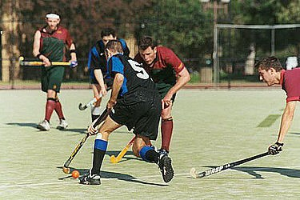

Hockey
| Home | About | Contactus | Indian Hockey Tournaments | International Hockey Tournaments | Subtypes |

Field hockey is played on gravel, natural grass, or sand-based or water-based artificial turf, with a small, hard ball approximately 73 mm (2.9 in) in diameter. The game is popular among both males and females in many parts of the world, particularly in Europe, Asia, Australia, New Zealand, South Africa, and Argentina. In most countries, the game is played between single-sex sides, although they can be mixed-sex.
The governing body is the 126-member International Hockey Federation (FIH). Men's field hockey has been played at each Summer Olympic Games since 1908 except for 1912 and 1924, while women's field hockey has been played at the Summer Olympic Games since 1980.
Modern field hockey sticks are constructed of a composite of wood, glass fibre or carbon fibre (sometimes both) and are J-shaped, with a curved hook at the playing end, a flat surface on the playing side and a curved surface on the rear side. All sticks are right-handed � left-handed sticks are not permitted.
While field hockey in its current form appeared in mid-18th century England, primarily in schools, it was not until the first half of the 19th century that it became firmly established. The first club was created in 1849 at Blackheath in south-east London. Field hockey is the national sport of Pakistan. It was the national sport of India until the Ministry of Youth Affairs and Sports declared in August 2012 that India has no national sport.
Wikipedia